Two problems, one number
Linear programming duality, built from a workshop with three shelves.
Here is a claim that sounds like an accounting curiosity and is not.
Every planning problem has a second problem hiding inside it, about prices. Solving either one solves both.
That fact is why a solver can tell you what a bottleneck is costing you rather than only what to do about it. It is why big problems can be cut into pieces and stitched back together. And it is what column generation and Benders decomposition are made of.
This guide builds the whole thing from a workshop with three shelves and two products, and never writes an equation.
The plan. Chapters 1 and 2 set up the problem and show why it cannot be solved by trying things. Chapter 3 invents the second problem, and chapters 4 and 5 are the two halves of the theorem. Chapters 6 to 8 are what practitioners actually use it for. Chapter 9 fences off what it does not say.
The numbers below are produced by the code in this folder and asserted by its tests. Exact rationals throughout, so "equal" means equal.
0What this is
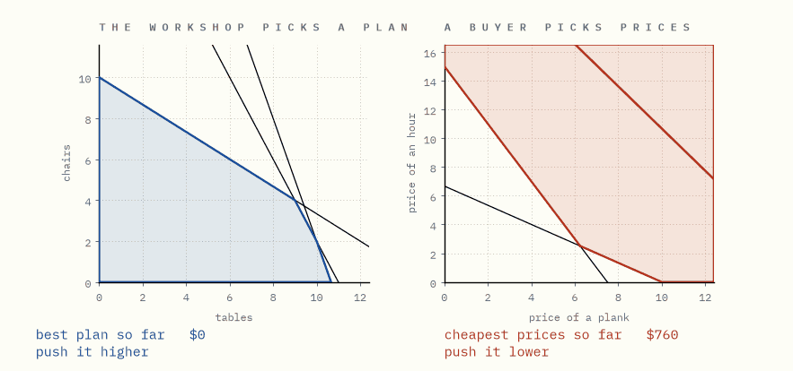
Watch the two panels. They are not the same picture.
The left one is a workshop owner asking what should I build? They push their profit as high as it will go.
The right one is a buyer asking what would I have to pay to buy this place out? They push their bill as low as it will go.
Different axes. Different shapes. One climbing, one falling. Neither is allowed to look at the other.
They stop at the same number. Not close to it. On it.
In one sentence. Two unrelated-looking questions about the same workshop have the same answer, and the rest of this guide is about why.
1The workshop
A workshop builds tables and chairs.
| planks | hours of work | saw time | sells for | |
|---|---|---|---|---|
| a table | 4 | 2 | 3 | $30 |
| a chair | 2 | 3 | 1 | $20 |
| in stock | 44 | 30 | 32 |
That is the whole problem. Three things there is a limited amount of, two things to make out of them, one question: what is the most money that can come out of this building?
Every possible plan is a point on a picture.
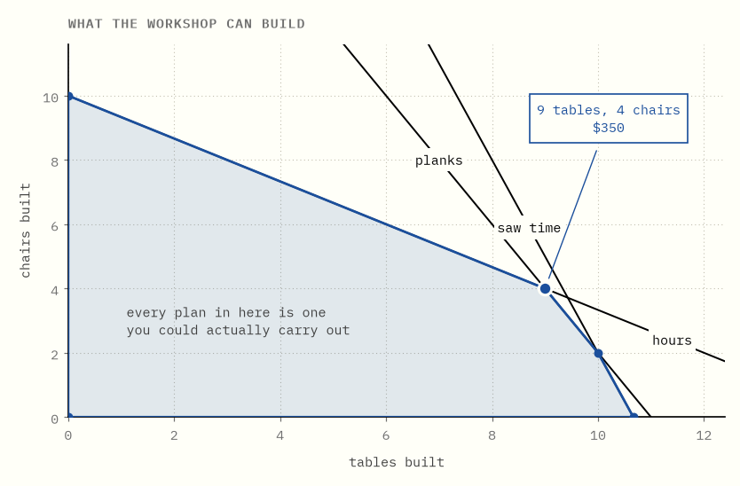
Build 5 tables and 2 chairs and you have used 24 planks, 16 hours and 17 of saw time. All three fit, so that plan sits somewhere inside the shaded region. Build 11 tables and you have consumed every plank with nothing left for chairs; that is the far corner on the right.
The edges are straight because building twice as much uses twice as much. That proportionality is the only assumption in this guide, and it is what gives the picture flat sides and sharp corners rather than curves.
Now find the best plan. Take all the plans worth some particular amount — that is a straight line — and push it outwards.
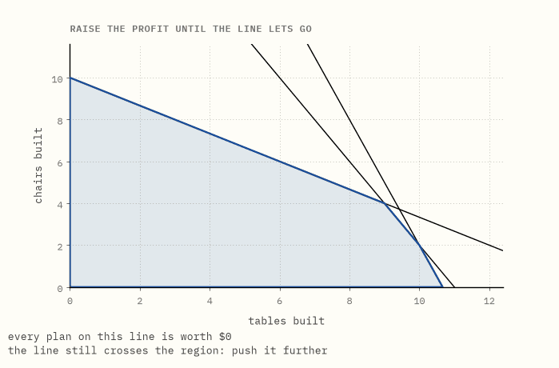
The last plan the line still touches is the best one: 9 tables and 4 chairs, worth $350.
It stops on a corner. That is not luck, and it is why every method in this repository spends its time on corners.
Try it yourself → Change what a table and a chair sell for, and watch the best corner jump from one to the next.
In one sentence. The plans form a region with flat sides, and the best one is always at a corner.
2A good plan cannot prove itself best
You have a plan worth $350. How do you know there is nothing better?
The obvious move is to try more plans. So try a lot of them.
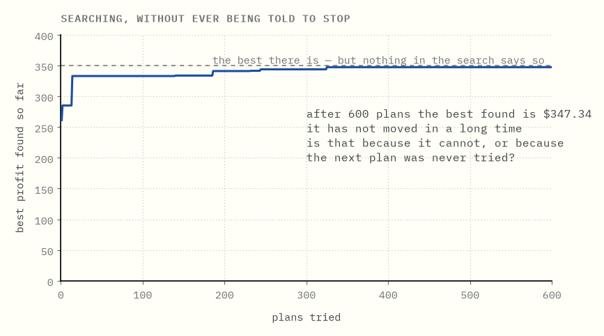
The curve flattens, and that is exactly the problem.
A flat curve looks the same whether you have found the best plan or have merely stopped getting lucky. Nothing in the search distinguishes those two.
Nor can you finish the job by being more thorough. The region is a continuum. 7 tables and 4½ chairs sits in it, and so does everything between that and its neighbours. Enumeration is not slow here; it is not defined.
The deeper issue is what a plan is able to say. A plan you can actually build is a statement of the form at least this much is possible. Stack up as many as you like and you still only have a floor.
What is needed is a statement of the opposite kind, saying no more than this is possible, and no plan will ever be one.
In one sentence. Plans give you floors, never ceilings, so no amount of searching can certify that you are finished.
3Charging for the ingredients
The ceiling comes from the other side of the ledger.
Stop building things. Instead put a price on each of the three things in stock: so much per plank, so much per hour of work, so much per hour of saw time. Any prices you like, as long as none is negative.
Those prices imply a price for a table, because a table is 4 planks, 2 hours and 3 of saw time. Try $7 a plank, $3 an hour, nothing for the saw. Then a table's ingredients are worth 4×7 + 2×3 = $34, and a chair's are worth 2×7 + 3×3 = $23.
Now notice something. A table sells for $30 and its ingredients are priced at $34. A chair sells for $20 and its ingredients are priced at $23. Both products are worth more as ingredients than as furniture.
Suppose that holds for every product. Then whatever the workshop builds, it consumes ingredients worth at least what the finished goods sell for. So the total value of everything on the shelves is at least the most the workshop could possibly earn.
That is a ceiling, and it came from prices rather than from plans.
The condition it needs is the one we just checked:
every product is priced at least as high as it sells for
Both halves of that matter, and the animation exists to make the failure concrete.
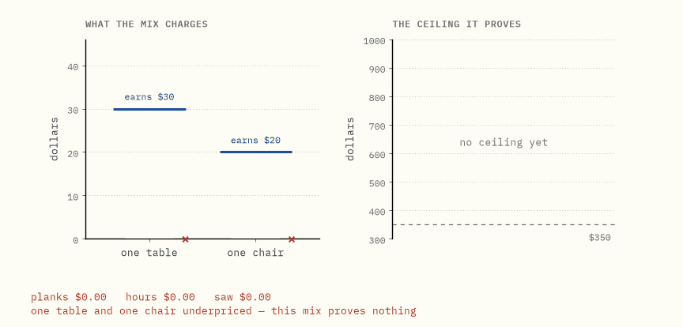
Watch the left panel first. Raising the plank price alone covers tables long before it covers chairs. While either bar is short, the prices prove nothing whatever. Not a weak ceiling. No ceiling. A price list satisfying one condition is worth as much as no price list.
Then watch what happens once both are covered. There is room to trade a lower plank price for a higher hourly rate, stay legal the whole way, and bring the ceiling down.
Try it yourself → Set the three prices by hand and find out how low you can push the ceiling before one of the products slips under its price.
In one sentence. A price list that covers every product proves an upper limit on what the workshop can earn, without reference to any plan.
4Every honest price list is a ceiling
That claim is the load-bearing step, so it deserves to be seen rather than asserted. It is also two ideas rather than one, and separating them is what makes it obvious.
Take any plan; it does not have to be a good one. Take any price list that covers both products. Line up three numbers.
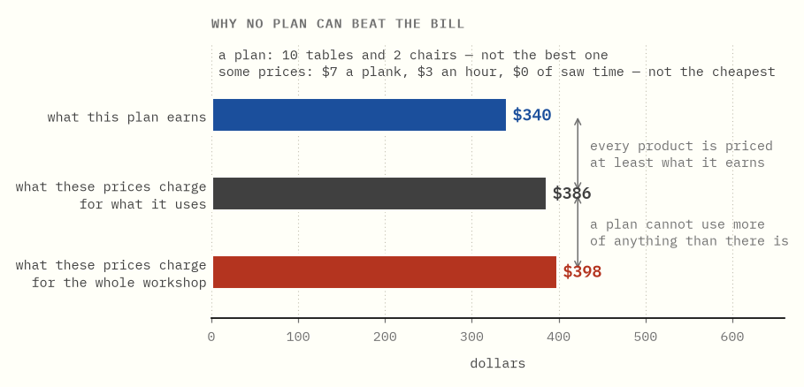
The plan builds 10 tables and 2 chairs, earning $340. The prices are $7 a plank, $3 an hour, nothing for saw time. Then:
- $340 ≤ $386, because every product is priced at least what it earns, so the ingredients a plan eats are worth at least what the plan makes.
- $386 ≤ $398, because a plan cannot use more of anything than there is.
So $340 ≤ $398.
Now notice what the argument never used: that this was a good plan, or that these were cheap prices. It holds for every plan and every covering price list simultaneously.
That is the payoff. Find a plan worth $350 and a price list charging $350, and no plan can beat $350 while you are holding one that reaches it. You are finished, you know you are finished, and you never examined a second plan.
(The standard name for this is weak duality. You can forget the name; the two bullets above are the whole content.)
In one sentence. Any honest price list is a ceiling over every possible plan at once, which is why a matching plan and price list end the search.
5The gap closes, every time
So plans push up from below and price lists press down from above. The question is whether they meet, or stop with a gap that nothing can close.
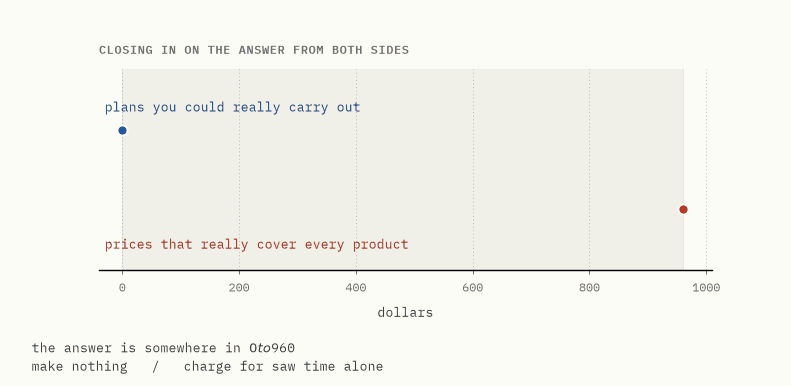
They meet. The best plan earns $350, the cheapest honest price list charges $350, and the space between them has nothing left in it.
It would be fair to suspect this workshop of being rigged. So here are 320 more, invented at random, with different numbers of products, different numbers of shelves and different recipes. Each was solved twice from scratch: once for its best plan, and once, as a separate problem, for its cheapest prices.

Every point is on the diagonal. Both sides are computed in exact fractions, so the largest disagreement across all 320 is zero. Not small. Zero.
Be clear about what that picture is, though. It is not a proof. It is 320 pieces of evidence, and a warning that any explanation had better account for all of them. The proof exists, and chapter 9 shows its shape by looking at what happens when the conditions fail.
This is the theorem the subject rests on, and it is called strong duality.
Two problems, then. The one about plans is the primal; the one about prices is the dual. Each is built from the other by turning it inside out. Rows become variables, variables become rows, the objective and the stock levels trade places, and the inequalities reverse. Do it twice and you are back where you started, which is the sense in which neither one is the original.
In one sentence. The best plan and the cheapest honest price list always agree exactly, which is what makes the second problem worth solving.
6Which rules are actually holding you back
Now the dual starts paying for itself.
The best plan is 9 tables and 4 chairs. Look at what it consumes: all 44 planks, all 30 hours, and 31 of the 32 hours of saw time. One hour of saw time sits there unused.
Now look at the prices: $6.25 a plank, $2.50 an hour, and nothing at all for saw time.
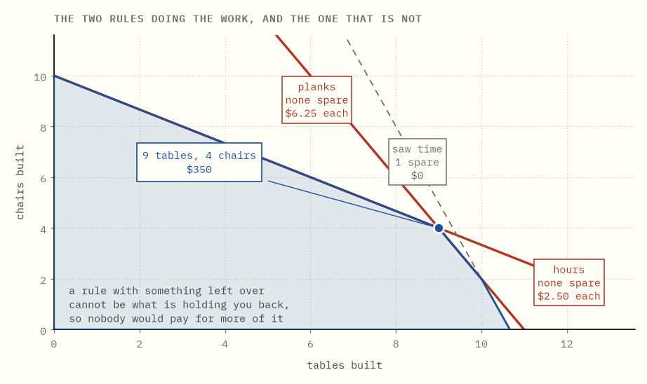
Spare saw time, zero saw price. Planks fully consumed, planks priced.
A resource with something left over is worth nothing; a resource that is all used up is worth something. Which, once said, is obvious. If saw time is not what is stopping you, nobody would pay you for another hour of it.
The same rule runs the other way, for products rather than resources. A product that gets built is priced at what it earns and no more. A product priced above what it earns is one you are better off not building, and in the best plan its quantity is zero.
This pairing is called complementary slackness. In practice it is the first thing anyone looks at, because it answers the question people actually have: not "what should I do" but "what is in my way".
Try it yourself → Change the stock levels and watch which rules become binding, and which prices switch on and off in response.
In one sentence. The prices identify the bottleneck by being zero on exactly the constraints that have slack.
7What one more plank is worth
The prices are more than a ranking. They are exact rates.
The plank price is $6.25, meaning one more plank in stock is worth $6.25 of extra profit. To the penny, and you can watch it happen.
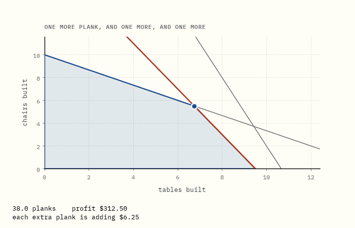
Add a plank. The plank line moves out, the best corner slides along the hours line, and the profit goes up by $6.25. Add another. Same again.
This is what a dual variable is, and why the name shadow price stuck.
It is worth being careful about what kind of number that is. Planks might cost $3 at the yard. Here the forty-fifth one is worth $6.25, because of what else this workshop happens to be short of. It is not a market price. It is a price to this workshop, given everything else it has, and that is the number you want when deciding what to buy, what to negotiate for, and what a bottleneck is costing.
Watch the end of that animation, though. The rate stops.
In one sentence. A dual variable is the exact rate at which the answer improves per extra unit of that resource.
8The price is only local
Keep adding planks and eventually the saw becomes the problem instead. From that point on, extra planks pile up unused and are worth nothing.
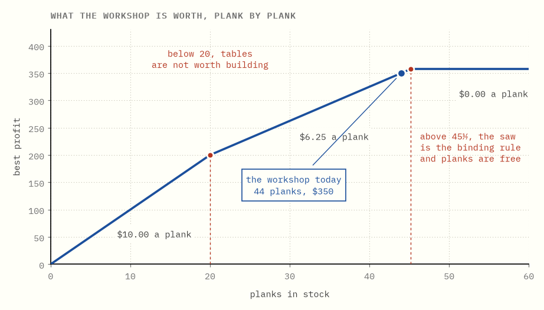
The whole curve is three straight pieces, and the plank price is the slope of the piece you happen to be standing on:
| planks in stock | one more plank is worth | why |
|---|---|---|
| under 20 | $10.00 | so few planks that tables are not worth building at all |
| 20 to 45 ⅐ | $6.25 | where this workshop actually is |
| over 45 ⅐ | $0.00 | the saw is the binding rule now; planks pile up |
The workshop has 44 planks. It is 1 ⅐ planks away from its price collapsing to nothing.
That is a narrow shelf to be standing on, and it is the most common way this idea gets misused. A shadow price quoted without the range over which it holds is close to useless.
The pieces get flatter, never steeper. Easy uses go first, so more of a resource is never worth more per unit than the last lot was, and the curve can only bend one way.
Try it yourself → Slide the stock of any of the three resources and watch its own price step down.
In one sentence. A shadow price is a local slope with an expiry date, so it always has to be quoted with the range over which it holds.
9When it goes wrong
Two things can go wrong, and the dual has something to say about both.
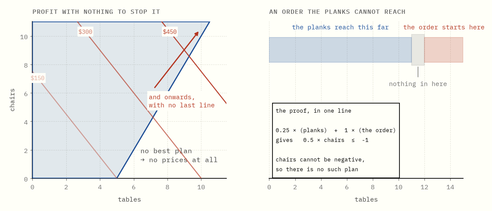
Profit that runs away. If the rules leave a direction the workshop can go forever, there is no best plan. A ceiling would have to be a number bigger than every plan, and no such number exists, so there are no honest prices either. The two failures come as a pair: the plan side runs away precisely when the price side has nothing to offer.
A plan that cannot exist. Suppose an order arrives for 12 tables. Forty-four planks make eleven tables, so the order cannot be met. The impossibility has a short proof, and the proof is arithmetic rather than an exhausted search:
Take a quarter of the plank rule, and all of the order. Add them together, and they say: half of the chairs, at most −1. A count of chairs cannot be negative. So there is no such plan.
Four lines, checkable by anyone, and it settles the question forever. This is the same idea as a price list wearing different clothes: a weighted mixture of the rules that adds up to something plainly absurd. It is called a Farkas certificate, and the fact that one always exists when a system is impossible is the fact strong duality is built on.
One more case, so it does not surprise you. At a bend in the curve from chapter 8 the price is not unique. Standing exactly at 45 ⅐ planks, one more plank is worth nothing and one fewer costs $6.25, and both numbers are legitimate prices. A solver will hand you one of them without mentioning the other. This is called degeneracy, and it is why a sensitivity report should be read as a range and never as a point.
In one sentence. Unbounded on one side means infeasible on the other, and impossibility always has a short arithmetic proof.
10Where this leads
Everything above is one small problem solved by hand. What makes duality worth this much attention is what gets built on it.
- The simplex method decides which product to bring into a plan by asking whether its dual row is violated. The "reduced cost" in any solver's log is the amount by which a product's ingredients cost less than it earns.
- Column generation turns that around. When there are too many possible products to write down, solve with a few, read the prices off the dual, and use those prices to ask whether some product you have not written down yet would be worth adding. The prices are the entire interface between the two halves.
- Dantzig–Wolfe decomposition is that idea applied to a problem with repeated structure, and branch and price is what you get when the pieces have to come out whole.
- Benders decomposition cuts the other way: fix the hard decisions, solve what is left, and take the dual of that leftover problem as a new rule to send back. Every Benders cut is a price list from chapter 3, doing the job it did there: proving a proposal cannot be as good as it claims.
The next guide, solving a model you never wrote down, is the second of those under load.
What the plain words are really called
Every invented phrase in this guide has a standard name. They are here so that anything you read next is legible.
| this guide says | everyone else says |
|---|---|
| a plan | a feasible solution |
| the best plan | an optimal solution |
| the plans problem | the primal |
| a price list that covers every product | a dual feasible solution |
| the prices problem | the dual |
| a ceiling | an upper bound |
| every honest price list is a ceiling | weak duality |
| the two always meet | strong duality |
| spare resources are worth nothing | complementary slackness |
| what one more is worth | a shadow price / dual variable |
| how long a price holds | right-hand-side ranging |
| the short proof that a plan cannot exist | a Farkas certificate |
| profit that runs away | unbounded |
| a price that is not unique | degeneracy |
Running the code
make bootstrap # once, from the repository root
cd lp-duality && make verify
The solver uses exact fractions throughout and Bland's pivoting rule, which is slower than the usual choice and cannot cycle. It is about 250 lines and is meant to be read. The tests check three separate things: that the mathematics is right, that the numbers written on this page still match what the code produces, and that the interactive pages compute the same values the Python does.